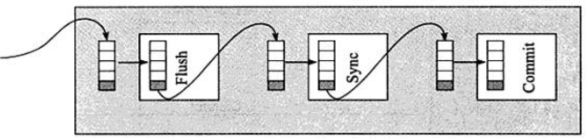

基本概念
undo log 有两个作用：提供回滚和多个行版本控制(MVCC)。
在操作任何数据之前，首先将数据逻辑备份到undo log，然后进行数据修改。如果因为某些原因导致事务失败或回滚了，可以借助该undo log进行回滚。
undo log和redo log记录物理日志不一样，它是逻辑日志。可以认为当delete一条记录时，undo log中会记录一条对应的insert记录，反之亦然，当update一条记录时，它记录一条对应相反的update记录。
当执行 rollback 时，就可以从undo log中的逻辑记录读取到相应的内容并进行回滚。有时候应用到行版本控制的时候，也是通过undo log来实现的：当读取的某一行被其他事务锁定时，它可以从undo log中分析出该行记录以前的数据是什么，从而提供该行版本信息，让用户实现非锁定一致性读取。
undo log是采用段(segment)的方式来记录的，每个undo操作在记录的时候占用一个undo log segment
另外，undo log也会产生redo log，因为undo log也要实现持久性保护。
undo log 的存储方式
innodb 存储引擎对 undo 的管理采用段的方式。**rollback segment称为回滚段，每个回滚段中有1024个 undo log segment **
在以前老版本，只支持1个rollback segment，这样就只能记录1024个undo log segment。后来MySQL5.5可以支持128个rollback segment，即支持128*1024个undo操作，还可以通过变量 innodb_undo_logs (5.6版本以前该变量是 innodb_rollback_segments )自定义多少个rollback segment，默认值为128。
undo log默认存放在共享表空间中。
1 | [root@xuexi data]# ll /mydata/data/ib* |
如果开启了innodb_file_per_table ，将放在每个表的.ibd文件中。
在MySQL5.6中，undo 的存放位置还可以通过变量 innodb_undo_directory 来自定义存放目录，默认值为”.”表示datadir。
默认rollback segment全部写在一个文件中，但可以通过设置变量 innodb_undo_tablespaces平均分配到多少个文件中。该变量默认值为 0，即全部写入一个表空间文件。该变量为静态变量，只能在数据库示例停止状态下修改，如写入配置文件或启动时带上对应参数。但是innodb存储引擎在启动过程中提示，不建议修改为非0的值，如下：
1 | 2019-01-01 13:16:00 7f665bfab720 InnoDB: Expected to open 3 undo tablespaces but was able |
和undo log相关的变量
undo相关的变量在MySQL5.6中已经变得很少。如下：它们的意义在上文中已经解释了。
1 | mysql> show variables like "%undo%"; |
delete/update操作的内部机制
当事务提交的时候，innodb不会立即删除undo log，因为后续还可能会用到undo log，如隔离级别为repeatable read时，事务读取的都是开启事务时的最新提交行版本，只要该事务不结束，该行版本就不能删除，即undo log不能删除。
但是在事务提交的时候，会将该事务对应的undo log放入到删除列表中，未来通过purge来删除。并且提交事务时，还会判断undo log分配的页是否可以重用，如果可以重用，则会分配给后面来的事务，避免为每个独立的事务分配独立的undo log页而浪费存储空间和性能。
通过undo log记录delete和update操作的结果发现：(insert操作无需分析，就是插入行而已)
- delete操作实际上不会直接删除，而是将delete对象打上delete flag，标记为删除，最终的删除操作是purge线程完成的。
- update分为两种情况：update的列是否是主键列。
- 如果不是主键列，在undo log中直接反向记录是如何update的。即update是直接进行的。
- 如果是主键列，update分两部执行：先删除该行，再插入一行目标行。
binlog和事务日志的先后顺序及group commit
如果事务不是只读事务，即涉及到了数据的修改，默认情况下会在 commit 的时候调用 fsync() 将日志刷到磁盘，保证事务的持久性。
但是一次刷一个事务的日志性能较低，特别是事务集中在某一时刻时事务量非常大的时候。innodb提供了 group commit 功能，可以将多个事务的事务日志通过一次fsync()刷到磁盘中。
因为事务在提交的时候不仅会记录事务日志，还会记录二进制日志，但是它们谁先记录呢？二进制日志是MySQL的上层日志，先于存储引擎的事务日志被写入。
在MySQL5.6以前，当事务提交(即发出commit指令)后，MySQL接收到该信号进入commit prepare阶段；进入prepare阶段后，立即写内存中的二进制日志，写完内存中的二进制日志后就相当于确定了commit操作；然后开始写内存中的事务日志；最后将二进制日志和事务日志刷盘，它们如何刷盘，分别由变量 sync_binlog 和 innodb_flush_log_at_trx_commit 控制。
但因为要保证二进制日志和事务日志的一致性，在提交后的prepare阶段会启用一个prepare_commit_mutex锁来保证它们的顺序性和一致性。但这样会导致开启二进制日志后group commmit失效，特别是在主从复制结构中，几乎都会开启二进制日志。
在MySQL5.6 中进行了改进。提交事务时，在存储引擎层的上一层结构中会将事务按序放入一个队列，队列中的第一个事务称为 leader，其他事务称为 follower，leader 控制着 follower 的行为。虽然顺序还是一样先刷二进制，再刷事务日志，但是机制完全改变了：删除了原来的prepare_commit_mutex 行为，也能保证即使开启了二进制日志，group commit 也是有效的。
MySQL5.6中分为3个步骤：**flush阶段、sync阶段、commit阶段。
- flush阶段：向内存中写入每个事务的二进制日志。
- sync阶段：将内存中的二进制日志刷盘。若队列中有多个事务，那么仅一次 fsync 操作就完成了二进制日志的刷盘操作。这在 MySQL5.6 中称为BLGC(
binary log group commit)。 - commit阶段：leader根据顺序调用存储引擎层事务的提交，由于innodb本就支持group commit，所以解决了因为锁
prepare_commit_mutex而导致的group commit失效问题。
在flush阶段写入二进制日志到内存中，但是不是写完就进入sync阶段的，而是要等待一定的时间，多积累几个事务的 binlog 一起进入 sync 阶段，等待时间由变量binlog_max_flush_queue_time 决定，默认值为 0 表示不等待直接进入 sync，设置该变量为一个大于0的值的好处是group中的事务多了，性能会好一些，但是这样会导致事务的响应时间变慢，所以建议不要修改该变量的值，除非事务量非常多并且不断的在写入和更新。
进入到 sync 阶段，会将 binlog 从内存中刷入到磁盘，刷入的数量和单独的二进制日志刷盘一样，由变量 sync_binlog 控制。
当有一组事务在进行 commit 阶段时，其他新事务可以进行 flush 阶段，它们本就不会相互阻塞，所以 group commit 会不断生效。当然，group commit 的性能和队列中的事务数量有关，如果每次队列中只有1个事务，那么 group commit 和单独的 commit 没什么区别，当队列中事务越来越多时，即提交事务越多越快时，group commit 的效果越明显。